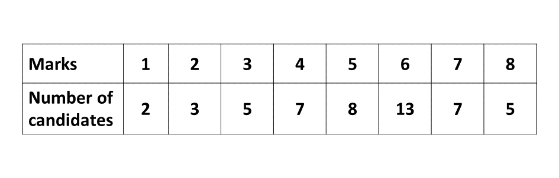

BECE
Year to Practice:
1990
1991
1992
1993
1994
1995
1996
1997
1998
1999
2000
2001
2002A
2002B
2003
2004
2005
2006
2007
2008
2009
2010
2011
2012
2013
2014
2015
2016
2017
2018
2019
2020
2021
2022
2023
PAST QUESTIONS 1999
Section A
Kindly check back later as our website is still in the process of being built.
Section B
Try the questions first, using not more than 15 minutes for each question, and watch the accompanying videos to see how the questions are solved.
Question 1
\(a)\) Kofi and Kojo were given ₵38,000.00 to share. Kojo had ₵7,500.00 more than Kofi. Find,
\(\hspace{0.5cm} i)\) Kofi's share
\(\hspace{0.5cm} ii)\) Kojo's share
\(b)\) A trader paid ₵1,500.00 for 6 drinking cups. One of the cups got broken. He sold the remaining 5, making a profit of 10%. Calculate
\(\hspace{0.5cm} i)\) The cost price of each of the six cups.
\(\hspace{0.5cm} ii)\) The selling price of each of the five cups.
\(\hspace{0.5cm} iii)\) The profit made on each of the cups sold.
Question 2
\(a)\) Solve the inequality \(\frac{2x - 1}{4} - \frac{x - 2}{3} \geq 1\)
\(b)\) Find the value of the expression \(2x - 3y\) if \(x = \frac{1}{3}\) and \(y = -\frac{1}{2}\).
\(c)\) 25 students in a class took an examination in Mathematics and Science. 17 of them passed in Science and 8 passed in both Mathematics and Science. 3 students did not pass in any of the subjects.
\(\hspace{0.5cm} i)\) How many passed in Mathematics?
\(\hspace{0.5cm} ii)\) The probability of meeting a student who passed in one subject only.
Question 3
\(a)\) Using a pair of compasses and a ruler only,
\(\hspace{0.5cm} i)\) construct triangle \(ABC\) such that \(|AB| = 10\) cm, \(\angle ABC = 30^\circ\) and \(|BC| = 8\) cm. Measure \(\angle ABC\).
\(\hspace{0.5cm} ii)\) construct a perpendicular from \(C\) to meet line \(AB\) at \(D\). Measure \(CD\).
\(b)\) Calculate the area of triangle \(ABC\).
Question 4
\(a)\) Using a scale of 2 cm to 2 units on both axes, draw two perpendicular axes \(Ox\) and \(Oy\) on a graph sheet. On the same graph sheet, mark the \(x-\)axis from \(-10\) to \(10\) amd the \(y-\)axis from \(-12\) to \(12\). Plot the points \(A(0, 10)\), \(B(-6, -2)\), \(C(4, 3)\) and \(D(-3, -11)\). Use the ruler to join the points \(A\) to \(B\) and also \(C\) to \(D\).
\(b)\) \(i)\) Draw the line \(x = -2\) to meet \(AB\) at \(P\) and \(CD\) at \(Q\).
\(\hspace{0.5cm} ii)\) Use the protractor to measure angles \(BPQ\) and \(PQC\).
\(\hspace{0.5cm} iii)\) What is the common name given to angles \(BPQ\) and \(PQC\)
\(\hspace{0.5cm} iv)\) State the relationship between lines \(AB\) and \(CD\).
Question 5
The table below shows the marks scored out of 10 by some candidates in a test.
\(a)\) From the table, find
\(\hspace{0.5cm} i)\) the modal mark/
\(\hspace{0.5cm} ii)\) how many students took the test.
\(\hspace{0.5cm} iii)\) the mean mark for the test.
\(b)\) If 20% of the candidates failed,
\(\hspace{0.5cm} i)\) how many failed?
\(\hspace{0.5cm} ii)\) What is the least mark a candidate should score in order to pass?